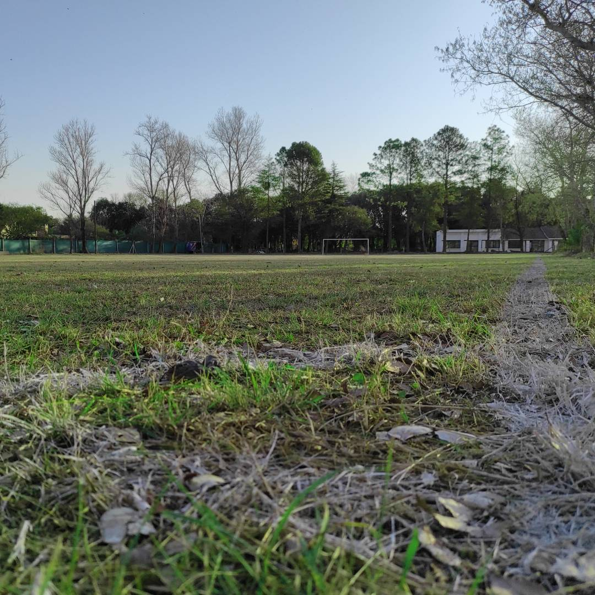
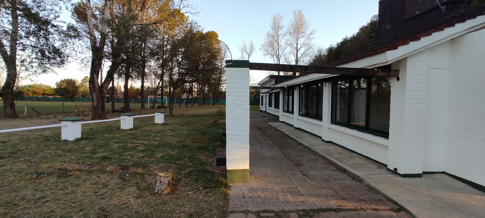
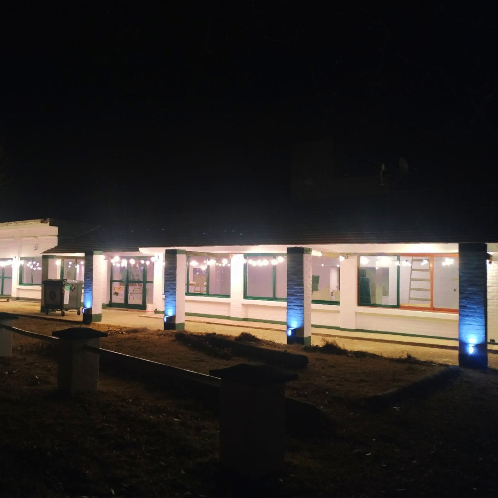

INSTITUCION
Todo era muy distinto hace 15 años, allá por septiembre del 2006. Un grupo de amigos tomó esa decisión de armar un equipo de fútbol para competir los sábados en el histórico torneo Quilmes.Estamos seguros que, en ese momento, ninguno se imaginaba que ese pequeño paso se convertiría en algo tan grande.
Pasaron diferentes torneos (Quilmes, Chacra, Golden, etc), cientos de jugadores vistieron la camiseta verde, se vivieron sábados de triunfos y derrotas. Incluso se ganaron campeonatos, retratados en las copas que adornan las vitrinas del club.
Sin embargo, siempre rescatamos lo más importante: se creó una familia y un hermoso sentido de pertenencia. Hace ya un año que nos convertimos en la ASOCIACIÓN CIVIL CLUB DE AMIGOS TALADRO, un sueño difícil de imaginar, pero que con el esfuerzo de cada uno estamos viendo posible día a día.
Los invitamos a conocernos, a participar y a formar parte de esta linda familia verde que tan orgullosos nos hace sentir.
El debut oficial del Taladro en el fútbol amateur de Córdoba tuvo lugar el 9 de septiembre de 2006, el día que marcó el inicio de 15 años ininterrumpidos compartiendo los sábados de fútbol y representando al conjunto verde
La evolución del equipo se fue plasmando a lo largo de los años, haciendo a Taladro un rival cada vez más competitivo. Tras varias frustraciones, llegó el año 2014. El año donde todo el esfuerzo iba a tener recompensa.
🏆 Campeones Torneo Golden Apertura
🏆 Campeones Torneo Golden Clausura
🏆 Campeones Interligas Rosario
Grandes jugadores y mejores personas desfilaron sábado a sábado con nuestra camiseta. Luego de varios años más compitiendo al máximo nivel, se abrió el juego a otro nivel. Los “viejos” crearon la categoría Máster, y los no tan viejos permitieron el recambio para seguir siendo competitivos en la Libre
Finalmente, hace un par de años sumamos el equipo Femenino, con un grupo increíble que nos permite luchar en tres frentes a nivel deportivo, y disfrutar esta pasión desde el lado humano
1 
2 
3 
4 
5 
6 
7 
8